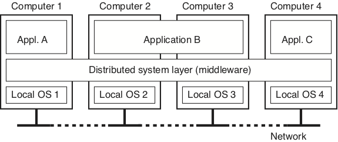
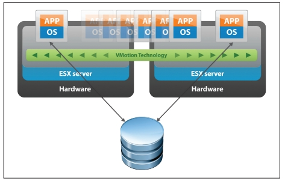
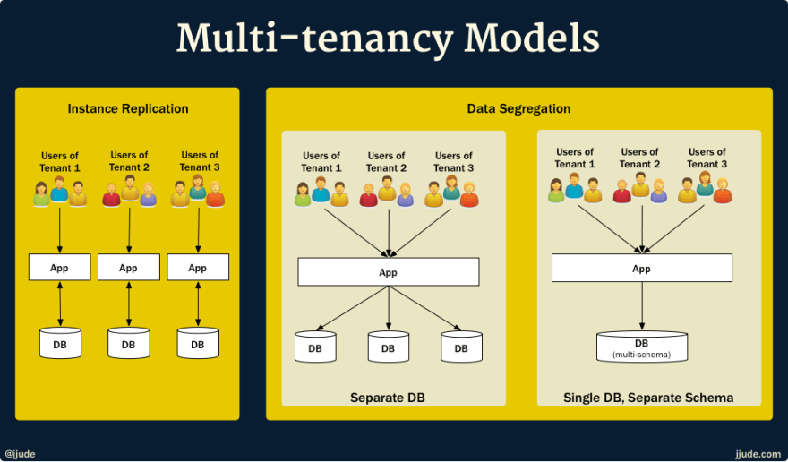

Middleware e Transparência
Middleware
- software
- hardware/OS
- aplicação
- diversas funcionalidades
De acordo com Tanenbaum & Van Steen, middleware é
... the software layer that lies between the operating system and applications on each side of a distributed computing system in a network.
Isto é, o middleware é a camada ware que fica no middle, entre o software e o hardware. Software, no caso, é a aplicação distribuída sendo desenvolvida e hardware é a abstração do host em que se executam os componentes, provida pelo sistema operacional. Uso aqui o termo abstração porque o sistema operacional pode encapsular hardware real, mas também pode encapsular outra abstração de hardware, por exemplo, uma máquina virtual ou contêiner.
A figura seguinte mostra um exemplo com três aplicações executando sobre um middleware, que por sua vez é executado sobre diferentes sistemas operacionais, em hosts conectados por uma rede de comunicação.

1Com este cenário em mente, é importante entender o que diz Sacha Krakowiak quando afirma que as principais funções do middleware são:
- esconder a distribuição e o fato de que uma aplicação é geralmente composta por múltiplas partes, executando em localizações geograficamente distintas,
- esconder a heterogeneidade dos vários componentes de hardware, sistemas operacionais e protocolos de comunicação
- prover interfaces uniformes, de alto nível e padronizadas para os desenvolvedores de aplicação e integradores, de forma que aplicações possam ser facilmente compostas, reusadas, portadas e feitas interoperáveis.
Assim, os middleware facilitam a conexão entre componentes e permitem o uso de protocolos mais abstratos que as operações de write(byte[]) e read(): byte[] dos protocolos de baixo nível, escondendo a complexidade da coordenação de sistemas independentes.
Desenvolver sistemas distribuídos sem usar um middleware é como desenvolver um aplicativo sem usar quaisquer bibliotecas: possível, mas complicado, e estará certamente reinventando a roda. Isto é, você praticamente tem que refazer o middleware antes de desenvolver o sistema em si.
Idealmente, com o middleware, o desenvolvedor conseguiria facilmente implementar uma aplicação em que a distribuição fosse totalmente transparente, levando o sistema, uma coleção de sistemas computacionais (software ou hardware) independentes, a se apresentar para o usuário como um sistema único, monolítico. Pense no browser e na WWW, por exemplo: o quanto você sabe sobre as páginas estarem particionadas em milhões de servidores? Isso é o que chamamos de transparência.
Transparência Total
Acesso + Localização + Relocação + Migração + Replicação + Falha
Se não há qualquer indício de que a aplicação é distribuída, então temos transparência total.
Podemos quebrar esta transparência total em várias transparências mais simples: Acesso, Localização, Relocação,
Migração, Replicação, e Falha.
Vejamos cada uma destas separadamente.
Transparência de Acesso
Transparência de Acesso
- como se apresenta
- representação de dados
- arquitetura
- OS
- linguagem
- padrões abertos e bem conhecidos.
A transparência de acesso diz respeito à representação de dados e mecanismos de invocação (arquitetura, formatos, linguagens...). Cada computador tem uma arquitetura e uma forma de representar seus dados. Por exemplo, considere os padrões para representação de números em ponto flutuante IEEE e IBM. Ambos dividem os bits em sinal, expoente e mantissa, mas com tamanhos diferentes.
IEEE2
| Precisão | Tamanho total (bits) | Sinal (bits) | Expoente (bits) | Mantissa (bits) |
|---|---|---|---|---|
| Half | 16 | 1 | 5 | 10 |
| Single | 32 | 1 | 8 | 23 |
| Double | 64 | 1 | 11 | 52 |
| Quadruple | 128 | 1 | 15 | 112 |
IBM3
| Precisão | Tamanho total (bits) | Sinal (bits) | Expoente (bits) | Mantissa (bits) |
|---|---|---|---|---|
| Single | 32 | 1 | 7 | 24 |
| Double | 64 | 1 | 7 | 56 |
| Quadruple | 128 | 1 | 7 | 112 (8b ignorados) |
E se dois componentes de um SD executam em máquinas com arquiteturas diferentes, como trocam números em ponto flutuante? É preciso que usem um padrão conhecido por ambos os hosts, seja o padrão a arquitetura "nativa" do host ou um padrão intermediário, definido pelo middleware.
A mesma questão é válida para representações de strings e classes, e diferenças de sistemas operacionais e linguagens.
No caso específico das strings, pense em um programa escrito em linguagem C e que este programa deva comunicar-se com um outro, escrito em Java, e trocar strings com ele.
Enquanto em C uma string é uma sequência de bytes imprimíveis terminadas por um \0, em Java uma string é uma classe que encapsula uma sequência de chars, sendo que cada char é um código 16 bits representativo de um código Unicode4.
Como transferir strings entre duas plataformas? Não fazê-lo? Simplificar a string Java? Estender a string C?
Para se tentar obter transparência de acesso, é importante que se use padrões implementados em múltiplas arquiteturas, abertos e bem conhecidos, com interfaces bem definidas.
Transparência de Localização
Transparência de localização
- onde está o objeto
- latência
- cache
- paralelismo
- programação assíncrona
- arquiteturas reativas
A transparência de localização diz respeito a onde está o objeto acessado pela aplicação, seja um BD, página Web ou serviço de echo: pouco importa ao usuário, se está dentro da mesma máquina de onde executa o acesso, se na sala ao lado ou em um servidor do outro lado do globo, desde que o serviço seja provido de forma rápida e confiável. A esta transparência é essencial uma boa distribuição do serviço, sobre uma rede com baixa latência, ou o uso de técnicas que permitam esconder a latência.
Escondendo a Latência
Para se esconder a latência, várias táticas são utilizáveis:
- Caching de dados
- Em vez de sempre buscar os dados no servidor, mantenha cópias locais dos dados que mudam menos (e.g., o CSS do stack overflow).
- Use paralelismo
- Em vez de validar formulário após preenchimento de cada campo, valide em paralelo enquanto usuário preenche o campo seguinte.
- Use callbacks para indicar campos com problemas a serem corrigidos.
- Saiba que nem todo problema é paralelizável, por exemplo, autenticação
- Use programação assíncrona
- AsyncIO
- C# await/async
- Futures e Promises
Outra forma de diminuir latência é trazer para próximo do usuário parte da computação. Isto é comumente feito com a interface com o usuário, mas pode ser usado também para outras partes do sistema. Como exemplo do primeiro, pense em consoles de video-game que fazem o processamento gráfico pesado de jogos online na casa do usuário5. Como exemplo do segundo, pense em aplicativos que mantém os dados em celulares até que uma boa conexão, por exemplo WiFi, esteja disponível para sincronizar com o servidor.
De forma geral, pense em esconder latência pelos seguintes passos:
- Distribua tarefas
- Delegue computação aos clientes (e.g., JavaScript e Applets Java)
- Particione dados entre servidores (e.g., Domain Name Service e World Wide Web) para dividir a carga e aumentar a vazão
- Aproxime dados dos clientes
- Mantenha cópias de dados em múltiplos lugares.
- Atualize dados de acordo com necessidade (e.g., cache do navegador, com código do google.com sendo atualizado a cada 4 dias)
Transparência de Relocação
Transparência de relocação
- como se movimenta
- visto por clientes
Às vezes componentes do sistema distribuído precisam ser movimentados de uma localização à outra, por exemplo porque um novo host foi contratado. Se implementadas corretamente, as técnicas que entregam transparência de localização não deixam que o cliente perceba a movimentação, no que chamamos transparência de Relocação.
- Rede de baixa latência
- Distribuição inteligente
- E.g: Serviços de nome
- Múltiplas cópias
- Cópias temporárias
Transparência de Migração
Transparência de migração
- como se movimenta
- visto por si mesmo
Do ponto de vista do próprio serviço, não perceber que está sendo movimentado é chamado transparência de Migração. Um serviço com esta propriedade não precisa ser parado e reconfigurado quando a mudança acontece. Uma das formas de se implementar esta propriedade é através da migração provida por máquinas virtuais, usado, por exemplo, para consolidar o uso de servidores em nuvens computacionais. Veja o exemplo do VMotion da VMware.

Na verdade, a movimentação neste cenário, é uma cópia da máquina virtual. Uma vez que a cópia esteja próxima do fim, a imagem original é congelada, a cópia concluída, e há um chaveamento na rede para se direcionar toda a comunicação para a nova cópia. A máquina original é então descartada.
Transparência de Replicação
Transparência de replicação
- redundância
- visto por clientes
A capacidade de ter cópias de um serviço e de direcionar trabalho de uma para outra é também útil para se obter transparência no caso de falhas. Isso porque para se manter um serviço funcional a despeito de falhas, é preciso ter múltiplas cópias, prontas para funcionar a qualquer momento.
Dependendo das garantias desejadas na manutenção da consistência entre as cópias, o custo pode variar muito, de forma que para se ter um custo menor, tem-se garantias mais fracas, por exemplo, que as réplicas têm um atraso entre elas de no máximo \(X\) minutos. Este é um dilema parecido com o TCP x UDP, em que mais garantias implicam em maior custo de comunicação.
Algumas aplicações toleram inconsistências e podem viver com menores custos. Um exemplo famoso é o dos "carrinhos de compra" da Amazon.com, que podem fechar pedidos com conteúdo diferente do desejado pelo cliente.
Outras aplicações são normalmente construídas com requisitos de consistência forte entre as réplicas, como sistemas financeiros. Para estas aplicações, uma técnica importante para se conseguir replicação é o uso de frameworks de comunicação em grupo, que entregam para múltiplas instâncias de um mesmo serviço, as mesmas mensagens, permitindo que elas se mantenham como cópias. Esta técnica funciona se os serviços forem máquinas de estado determinísticas, que consideram como eventos as mensagens entregues pelo protocolo de comunicação em grupo e é denominada replicação de máquinas de estado.
Replicação de Máquina de Estados
- determinística
- mesmo estado inicial
- mesmos eventos
- mesmo estado final
- atraso entre réplicas
Todo
Figura com state machine replication
Novamente é preciso chamar à atenção a questão dos custos desta técnica. Replicação de Máquinas de Estados é muito custosa e por isso faz-se um esforço para não utilizá-la ou para utilizá-la em "cantinhos" do sistema onde inconsistências são absolutamente caras demais para serem permitidas. Isso porque manter múltiplas cópias \(\Rightarrow\) sincronização \(\Rightarrow\) custos. Se houver mudanças frequentes nos dados, tal custo precisa ser pago também frequentemente. Mitigações incluem uso de réplicas temporárias, protocolos de invalidação de cache, contratação de redes com mais largura de banda e menor latência, sendo que estes últimos esbarram em limitações financeiras e físicas.
Transparência de Concorrência
Transparência de concorrência
- imperceptibilidade de outros serviços
- visto por clientes
Outra transparência almejável é de concorrência, isto é, imperceptibilidade quanto ao fato de que o serviço está executando concorrentemente a outros serviços e sendo acessado por outros clientes. Isto é importante tanto em termos de segurança, no sentido de que um cliente não deveria acessar os dados do outro, caso isso seja um requisito do sistema, quanto em termos de desempenho. Nuvens computacionais são um exemplo de onde este tipo de transparência é essencial.
Considere um serviço de banco de dados em uma nuvem qualquer. Para prover a mesma interface com a qual usuários estão acostumados a anos, é possível que este serviço seja simplesmente um wrapper ao redor do SGBD que se comprava e instalava in-house anteriormente. Para se tornar viável, contudo, uma mesma instância deve servir múltiplos clientes, os tenants, sem que a carga de trabalho introduzida por um, interfira no desempenho do outro. No meio, chamamos esta propriedade de multi-tenancy, mas é apenas um exemplo de transparência de concorrência.

Esta transparência está fundamentalmente ligada à escalabilidade, isto é, à adequação dos pools de recursos às demandas dos clientes: se mais clientes estão presentes, então aumente a quantidade de servidores (scale up) e separe as cargas (sharding); se menos clientes estão presentes, então desligue algumas máquinas (scale down) e consolide recursos.
Desafios para se obter transparência
Apesar de desejáveis, as transparências discutidas são difíceis de se conseguir, principalmente se em conjunto. Isso porque, do ponto de vista de usuários espalhados pelo globo, atrás de redes heterogêneas e com possibilidade de erros, acontecerão atrasos e perdas na comunicação, denunciando a distribuição.
Do ponto de vista do desenvolvedor, é preciso tomar decisões baseado em premissas ligadas à realidade da rede. Por exemplo, se uma requisição não foi respondida, quanto tempo um cliente deve esperar antes de reenviá-la, possivelmente para outro servidor, sem incorrer em risco significativo da requisição ser processada duas vezes? A resposta para esta pergunta é muito mais complicada do que pode parecer.
De forma geral, qualquer aumento de transparência tem um custo, seja em termos monetários (e.g., contratação de enlace dedicado ou de host em outra posição geográfica), ou em termos de desempenho (e.g., coordenar a entrega de mensagens em sistemas de comunicação em grupo).
Provavelmente os maiores obstáculos para se alcançar os diversos tipos de transparência são impostos pela parte da infraestrutura que torna o sistema distribuído possível, a rede. Para entender o porquê, vejamos algumas premissas normalmente assumidas sobre a rede que não são, definitivamente, verdade:
- A latência é zero.
- A largura de banda é infinita.
- A rede é confiável.
- A rede é segura.
- A rede é homogênea.
- A rede é estática.
- A rede tem acesso grátis.
- A rede é administrada por você ou alguém acessível.
-
Distributed Systems: Principles and Paradigms. Capítulo 1, Figura 1. ↩
-
Simplificações são possíveis, mas introduzem outras complexidades. ↩
-
O Google stadia é uma plataforma de jogos que vai na contramão desta ideia, levando todo o processamento pesado para a nuvem. ↩